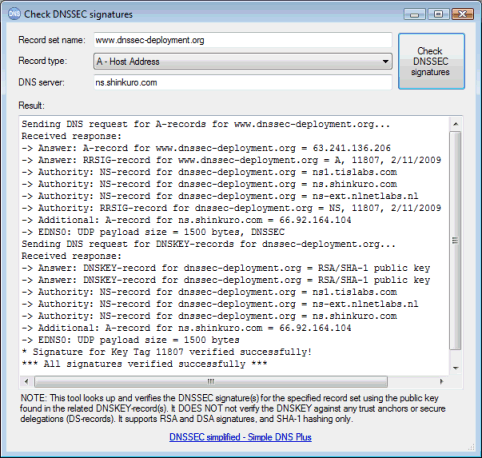
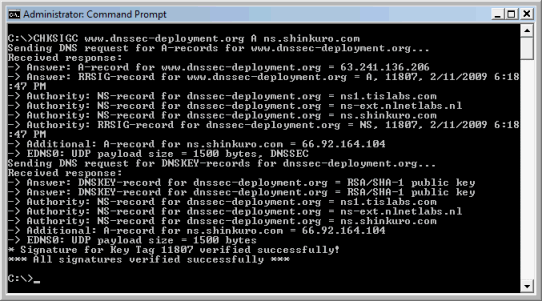
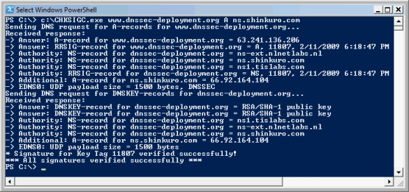

"Check DNSSEC Signatures" is a free tool which looks up and verifies the DNSSEC signature(s) for the specified record set using the public key found in the related DNSKEY-record(s).
It DOES NOT not verify the DNSKEY against any trust anchors or secure delegations / DS-records (we may add this in a future version).
It supports RSA and DSA signatures, and SHA-1 hashing only (recommend and most common).
We created this tool in order to test our new DNSSEC signing functions in Simple DNS Plus v. 5.2 - mostly because we couldn't find any existing DNSSEC testing tools for Windows.
99% of the program code in this tool comes from Simple DNS Plus, so how do we know that either is working correctly? Simple - we tested the tool against a bunch of DNSSEC signed zones around the Internet, and since this was successful, the signing function in Simple DNS Plus must be working too.
Download chksig.zip (269 KB) (v. 1.0 build 1)
System requirements: Windows 98/2000 or later + .NET Framework 2.0 or later.
This zip file contains both a Windows GUI version (ChkSigW.exe) and a command line version (ChkSigC.exe) of the same tool.
The command line version returns an exit code 1 if it encounters any problems, so this could be used as part of some automated script to periodically check your zones.
Windows GUI version:

Command line version:

...also works in PowerShell:
Version 1.0 build 1 - July 14th 2009
- Fixed: Errors importing DNSKEY-record data were not caught and caused program crash.
Version 1.0 build 0 - January 24th 2009
- First release.